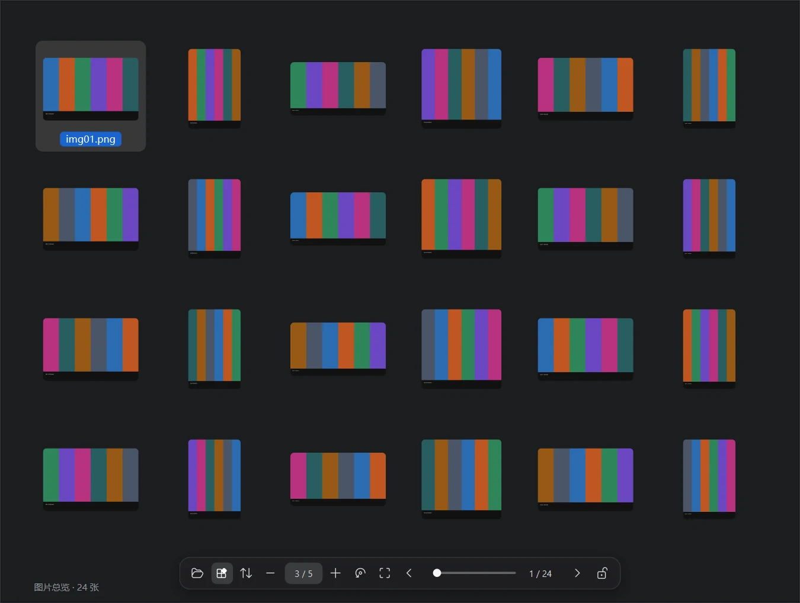
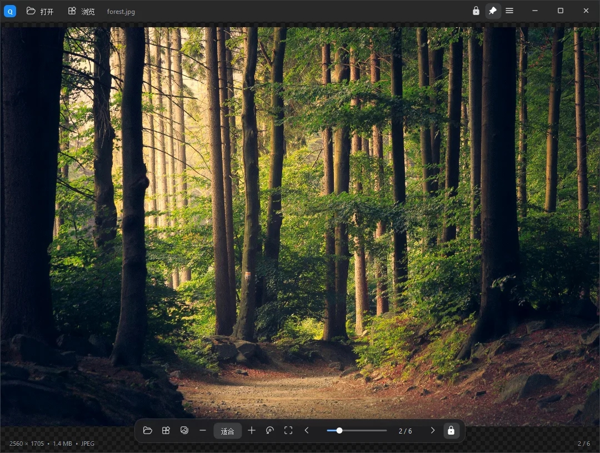
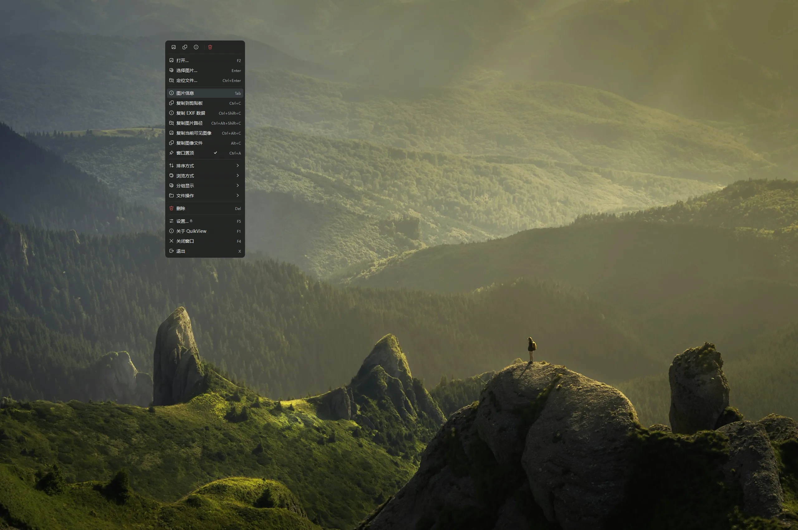
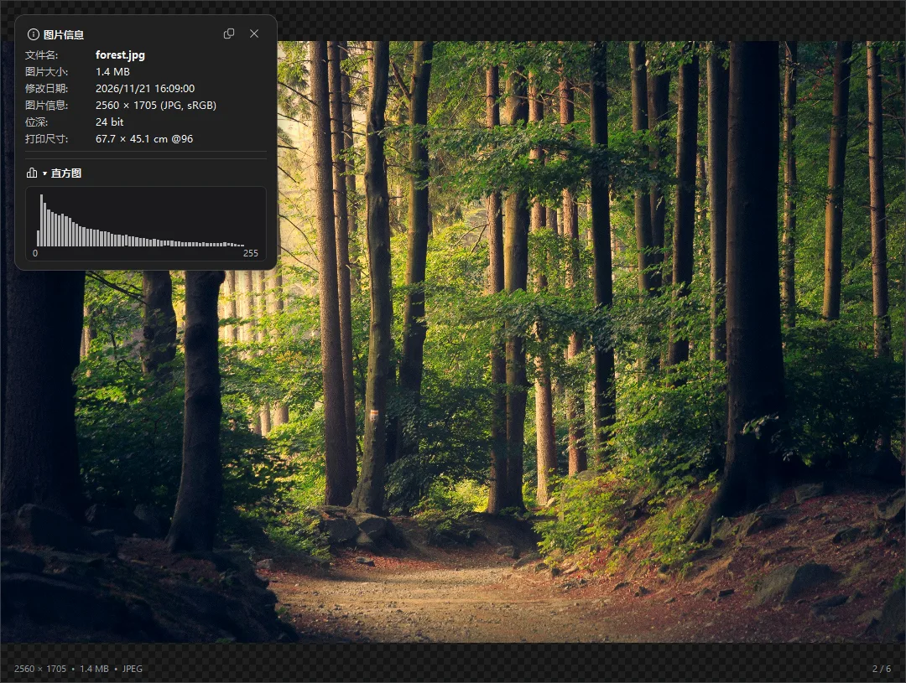
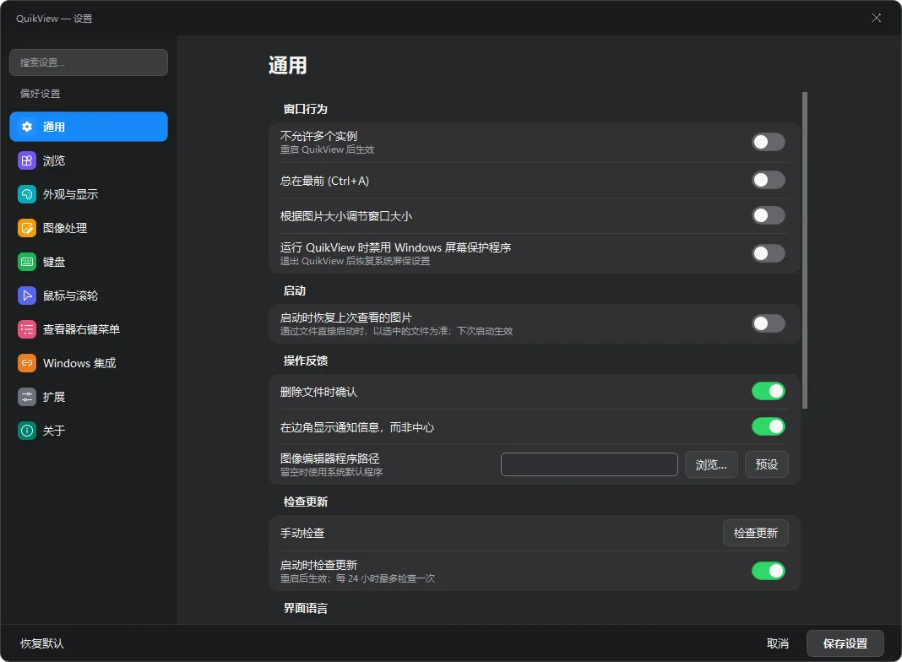
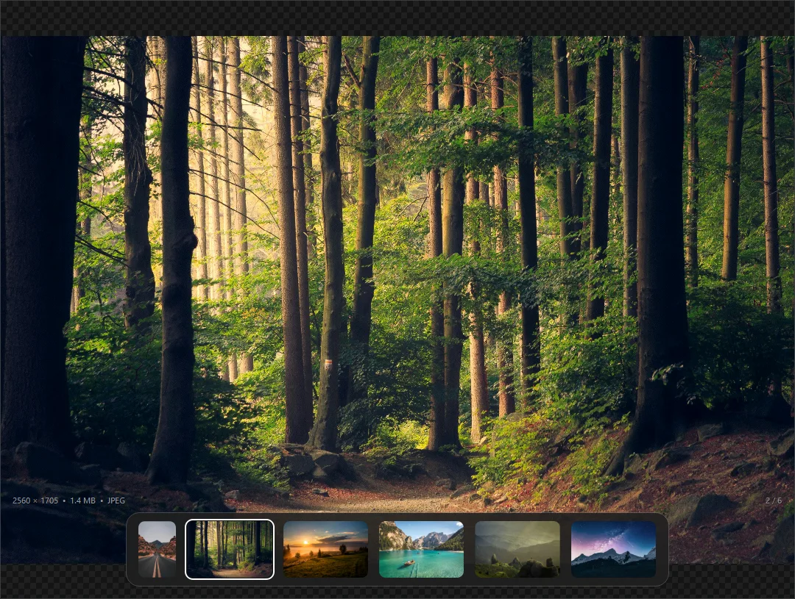

文件夹秒开 & 图片总览
打开任意一张图片即可顺序翻阅同目录全部照片；支持底部异步缩略图胶片栏、五档缩放总览网格，以及直接打开 ZIP / CBZ 压缩包流畅翻图。

打开一张图，即刻流畅翻阅整夹照片。原生 C++ 与 Qt 6 驱动，支持 RAW / HEIC / SVG、双页阅览、EXIF 直方图、压缩包直读与 Windows 资源管理器深度集成。

告别臃肿启动页与冗余后台进程，把专注度还给画面本身。
打开任意一张图片即可顺序翻阅同目录全部照片；支持底部异步缩略图胶片栏、五档缩放总览网格，以及直接打开 ZIP / CBZ 压缩包流畅翻图。

自研无 GPL 依赖的元数据解析器，呼出即看光圈、快门、ISO 与亮度直方图；包含 GPS 坐标的照片支持一键跳转地图定位。
除常规格式外，原生直读相机 RAW（DNG / NEF / CR2 / ARW / RW2）、HEIC / AVIF、SVG 矢量与 PSD / PSB 缩略图，另提供可选 360° 全景查看器组件。
专为画册与漫画设计的跨页并排视图，支持与单页模式随时切换，搭配可配置的翻页与首尾提示行为。
一键将多张照片批量转换至 PNG / JPEG / BMP / WebP / TIFF，内置裁剪、尺寸缩放、反色、Gamma 与多种插值算法。
独立纯 Win32 COM 壳扩展（不依赖 Qt），在资源管理器中直接渲染 PSD / SVG / 常见图片缩略图与 QuikView 右键菜单；内置 9 种界面语言。
安装包约 29 MB，便携版解压即用、配置存放在程序目录；十余项常用设置即改即生效，安装与卸载无需重启电脑，全程零遥测、零推广。
从主画布、右键菜单到设置面板，全部采用统一 Fluent 深浅主题设计语言。
精简后的顶部栏「打开 / 浏览」与画布背景浑然一体；右键菜单支持大纲式分类开关与顶部五图标快捷区，改完立即在右侧实时预览。

Fluent 统一样式，图标与快捷键右省略对齐
无论摄影师核对 RAW 细节、暗部直方图与拍摄参数，还是整理本地画册、漫画并排翻阅，按键一触即达。
Tab 呼出悬浮信息卡：EXIF 参数 + 亮度直方图1:1 实际像素缩放，锐利呈现原图质感而不抹平
EXIF 元数据与亮度直方图，按 Tab 快速呼出
72 个统一 40×22 Switch 开关配合页内关键词检索；界面语言、缓存策略、强锐化、翻页音效无需重启立刻生效。

十大分类导航与统一 Switch 开关，支持全文搜索设置项
截图全部由 QuikView v0.6.1 实际渲染生成，点击大图进入灯箱查看高清细节。

借助 Qt 6 图像插件与内置 libraw / libheif 解码能力，无需额外折腾编解码器包。
覆盖日常摄影、网页动静图与移动端高压缩格式，打开即看。
集成 libraw 直读主流单反/微单 RAW，支持过滤同名 JPEG+RAW。
内置 QSvgRenderer 渲染矢量图，PSD/PSB 可看缩略图与图层预览。
无需解压直接翻看漫画归档，另有可选 360° 全景查看器组件。
v0.6.1 · 2026-11-26 · Windows 10 / 11 x64
注册资源管理器缩略图与 QuikView 右键菜单，可选 360° 全景组件；安装与卸载均无需重启。
下载安装版解压后直接运行，无需另装 Qt 运行库，配置自动保存在程序目录，适合随身携带。
下载便携包下载后可使用 SHA-256 清单核对文件摘要，确认安装包未经篡改或损坏。
Get-FileHash QuikView-0.6.1-setup.exe -Algorithm SHA256
实时拉取自 github.com/xdsT2/quikview（Releases 与 CHANGELOG.md），支持按关键词或版本号检索。
QuikView 基于 C++ 与 Qt 6 从零构建，采用 MIT 开源许可证。所有源码、架构文档、路线图与发布校验记录均在 GitHub 公开，零遥测、无广告、无捆绑软件。
免责声明：本项目为独立实现，与 Honeyview / Bandisoft 无任何从属、授权或背书关系。